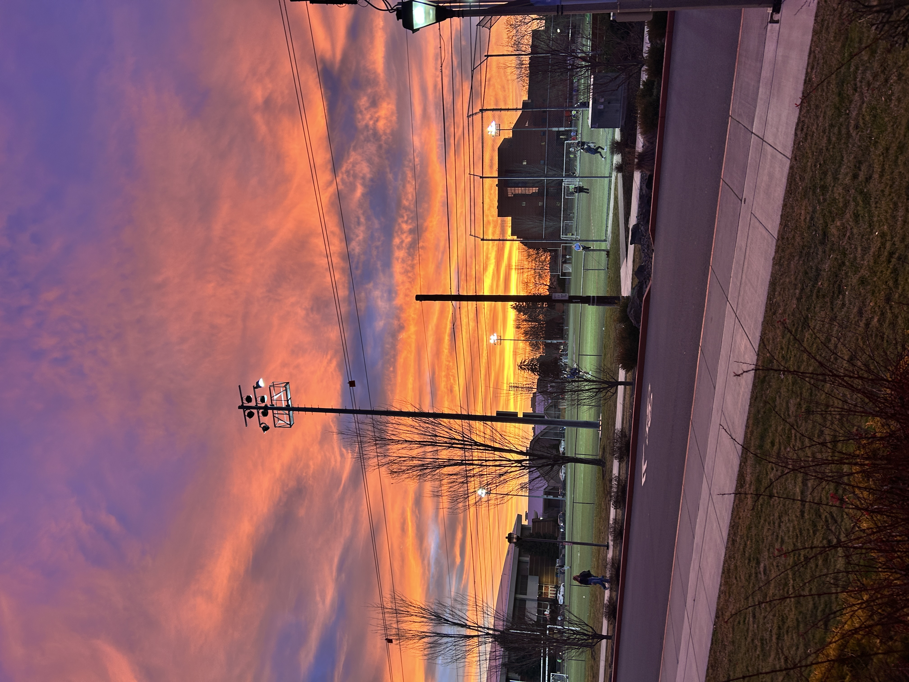
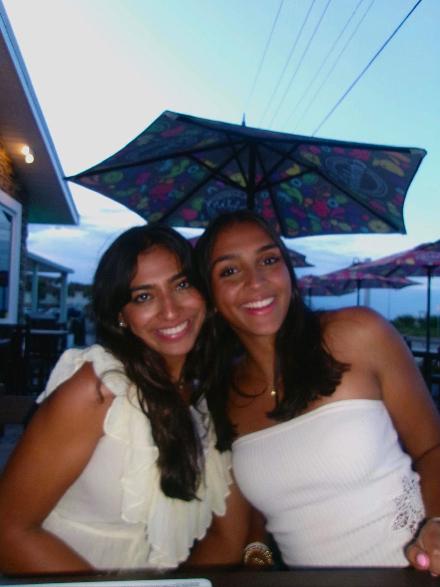
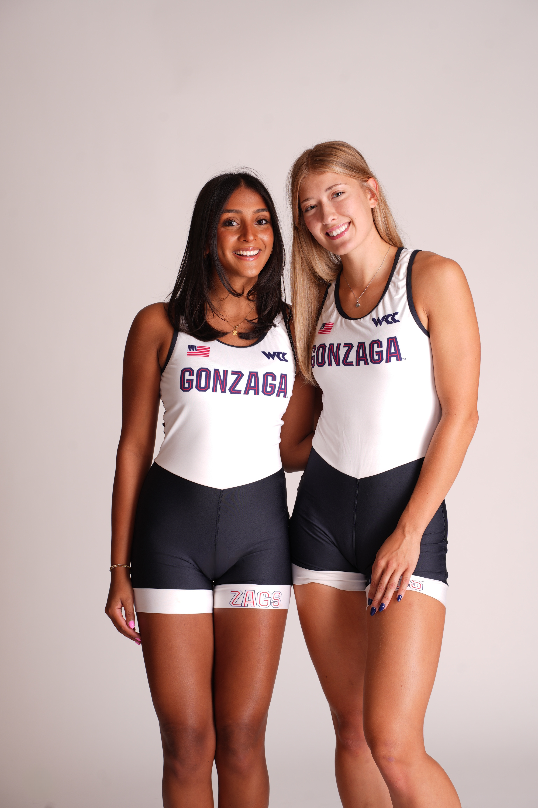

Since 2026 is almost over, I want to share my top 5 favorite pictures!.

This picture was taken in January These girls are some of my closet friends, and I live with two of them currently

gloom we had ="400">

a month a year , so it meant a lot that we made the trip happen.="400">
first friends at Gonzaga! We called every day over summer, and she is my best friend. This is a picture of us onBuilt by Diya Varma · BMIS 235